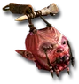

Heyday

Paingiver
Zombie Head
Defense: 4-8
Chance to Block: 5%
Required Level: 12
+25-40 Defense
+1-3 to Curses
+1-3 to Amplify Damage (class only)
+25 to Mana
15-25% Increased Chance of Blocking
+15% Faster Block Rate
Unique Necromancer Head
Paingiver
- Type
- Necromancer Head
- Base
- Zombie Head
- Tier
- Normal
- Required level
- 12
- Item level
- 1
- Required strength
- 14
- Max sockets
- 2
- Class
- Necromancer only